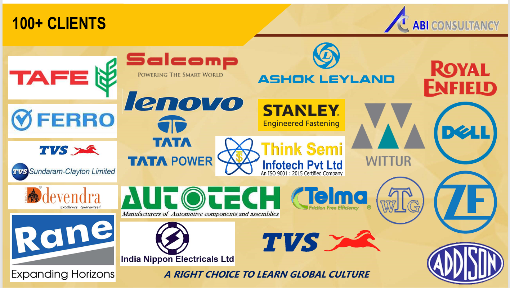
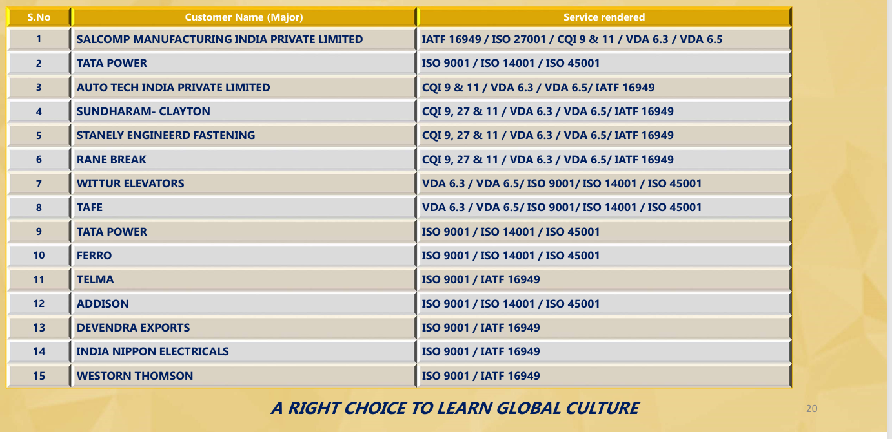
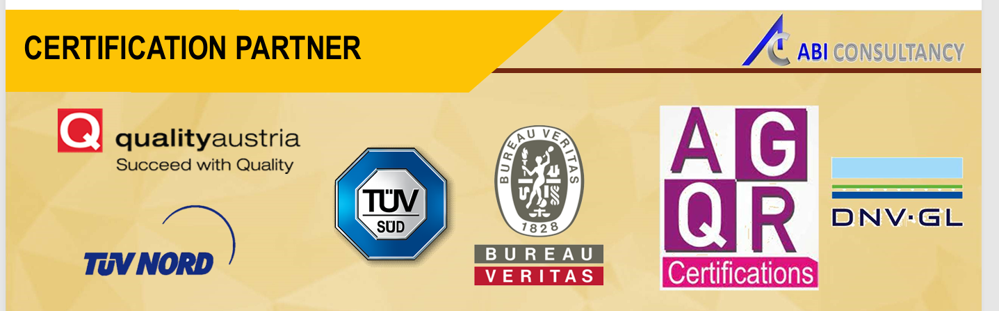

SALCOMP MANUFACTURING INDIA PRIVATE LIMITED
IATF 16949 · ISO 27001 · CQI-9 & CQI-11 · VDA 6.3 · VDA 6.5
CLIENT EXPERIENCE • INDUSTRY SUPPORT
ABI Consultancy's supplied profile references 100+ clients and records support across automotive, manufacturing, engineering and related industries.
SELECTED REFERENCES
The organisations and service areas below are transcribed from the client-reference material provided to ABI Consultancy. The list is a selection, not a complete customer register.
IATF 16949 · ISO 27001 · CQI-9 & CQI-11 · VDA 6.3 · VDA 6.5
ISO 9001 · ISO 14001 · ISO 45001
CQI-9 & CQI-11 · VDA 6.3 · VDA 6.5 · IATF 16949
CQI-9, CQI-27 & CQI-11 · VDA 6.3 · VDA 6.5 · IATF 16949
CQI-9, CQI-27 & CQI-11 · VDA 6.3 · VDA 6.5 · IATF 16949
CQI-9, CQI-27 & CQI-11 · VDA 6.3 · VDA 6.5 · IATF 16949
VDA 6.3 · VDA 6.5 · ISO 9001 · ISO 14001 · ISO 45001
VDA 6.3 · VDA 6.5 · ISO 9001 · ISO 14001 · ISO 45001
ISO 9001 · ISO 14001 · ISO 45001
ISO 9001 · IATF 16949
ISO 9001 · ISO 14001 · ISO 45001
ISO 9001 · IATF 16949
ISO 9001 · IATF 16949
ISO 9001 · IATF 16949
VISUAL REFERENCES
These images reproduce the client-logo and client-service reference material supplied to us.


CERTIFICATION PARTNER REFERENCES
The supplied image displays the following names/logos: Quality Austria, TÜV NORD, TÜV SÜD, Bureau Veritas, AGQR Certifications and DNV-GL. Their inclusion here records the profile reference only and does not imply endorsement, formal partnership, or authorisation unless separately confirmed.

Client names, logos and service references are published based on the materials provided by ABI Consultancy. Please confirm permission to publicly display each organisation's name/logo and verify spellings and service history before final public promotion. Logos belong to their respective owners.
Discuss your training, documentation, audit or compliance requirements with ABI Consultancy.